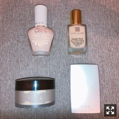
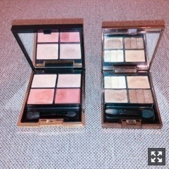
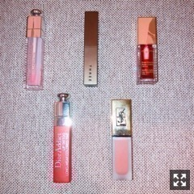
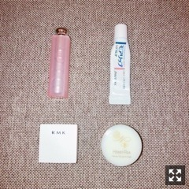

女子〜女子〜！！女の子に生まれたからにはっ
みなさまこんにちは！！
乃木坂46の
梅澤美波です！
メイクについて
たくさん言っていただいていたので、、
書いてみることにしましたっ！
メイク道具って
時期や気分でかなり変わるし
あくまで今のラインナップだから
きっとまたすぐ変わったりするけど、、
そしたらまた書くとして、
とりあえずまとめてみたよ☺︎
前回のコメントから
ベースメイクとリップと
アイシャドウが圧倒的に多かったので！！
今回はその３点を◎
参考になるか分からないけど
気になったらチェックしてみてね☺︎
男性の方は
女の子はこういうのを駆使して
頑張ってるんだなと見守ってください
（笑）
ではまずベースメイク！！

左上：ポール＆ジョー プロテクティング ファンデーション プライマー S 01
右上：エスティーローダー ダブルウェア ステイインプレイス メークアップ
左下：ローラ メルシエ ルースセッティングパウダー トランスルーセント
右下：RMK シルクフィット フェイスパウダー P01
まず、ベースメイクって
何処に重きを置くかで
だいぶ変わると思うんだけど
私はお仕事上、長時間メイクしてたり
長い収録で直せない時間が多かったりするから
崩れなさを重視しているので
今はこのベースメイクのラインナップ！！
ブランドは
かなりミックスされているんだけど、、(；；)
ポール＆ジョーさんの下地と
エスティーローダーさんのファンデの組み合わせが私的にすごく合う！！
最近はずっとこの組み合わせ！
パウダーはローラメルシエさんのもの！
粒子が細かいので
すごく綺麗に見せてくれます！
RMKさんのは
最近買ったお気に入りのもので
これはお直し用！
顔に乗せると馴染んでくれる
細かいラメが入っていて
光が当たると自然に綺麗に見える！
オススメ！！
コンシーラーやハイライトは
また別に使ってるものあります！
撮り忘れちゃったごめんね(；；)
ナチュラルめの肌が好きだったり
ツヤ肌が好きって子は
また違ったものをオススメします(；；)！
ツヤ肌だと、
THREEさんのファンデがオススメ！！
冬だから乾燥大敵よね(；；)
お次はアイシャドウ！！

今はこのふたつ！！
左：SUQQU デザイニング カラー アイズ 04 絢撫子
右：LUNASOL スリーディメンショナルアイズ 01
基本使うのは右のLUNASOLさんの！
このアイシャドウは
捨て色がなくてとにかく使いやすい！
どのシーンにも合うので
これはずっと持ち歩いている！
左上の白のカラーを瞼全体、
右上を涙袋、
左下と右下のカラーでグラデーションを
作っています！！
ラメ入りとマットなアイシャドウが
ミックスして入ってるので
場面ごとに使えるのも好き！！
左のSUQQUさんのアイシャドウは
めちゃくちゃお気に入りで
気分でこっち使ったり
涙袋にピンク入れてみたりしてます！
ぷっくりするし
意外とピンクでも馴染むのでオススメ！
このふたつのアイシャドウを
組み合わせると可愛いの〜(；；)
ピンクと茶色ってすごく合う☺︎
アイシャドウは季節によって
使うもの変えたりするので
今はこれ！って感じかなあ〜
秋はボルドーのアイシャドウ
使ったりします！
お次はリップ！

左上：Dior リップマキシマイザー 001
上真ん中：THREE ベルベットラストリップスティック 16
右上：CLARINS コンフォートリップオイル 03
左下：Dior リップティント 661
右下：YSL タトワージュ クチュール 23
まず、コスメの中でも
リップはめちゃくちゃ好きで
集めるのが好きだから
日々使うものは変わるんだけど、、
今はこんな感じです！
リップマキシマイザーは
もう５本目くらいになるかな〜
メイクする前１番にこれを塗って
潤わせます〜
ぷっくりしてオススメ！！
THREEさんのリップは
ちょっと暗めの赤！
ポンポンってつけます！
秋は暗めの色つけたくなります☺︎
でも暗すぎないから
お仕事の時でもちょうどいい◎
顔を一気に明るく見せてくれます！
CLARINSさんのリップオイルも
３本目！！
なんと言っても匂いが最高！
あとはこれ塗ると唇が
とゅるん！てする！伝われ！！（笑）
左下のティントは
長時間のお仕事向けです☺︎
右下のリップは
最近仲間入りしたのだけど
ダークめのベージュ！って感じで
つけると一気にオシャレ唇になる！
秋っぽくて可愛いの〜(；；)
これはプライベートで使うことが多いかな☺︎
最近１番のお気に入り！
ナチュラルだしぜひ使ってみてほしい！
リップはこんな感じです〜
リップのリクエストすごく多くて
もう冬だし乾燥するし
女の子リップ好きだもんな〜って思って
ついでにリップケアも！！

左上：Dior スクラブ＆バーム 001
右上：モアリップ
左下：RMK リップバーム
右下：HONEY ROA ハニーリップゴマージュr
スクラブ＆バームは
お仕事の時持ち歩いていて
荒れてるな〜唇ごわつくな〜って時に
外でも使えるように！！
気になった時すぐケアできます！
モアリップは
本当に荒れてる時、
これでリップパックしたりします！
そうすると私はすぐ治るかな☺︎
RMKさんのリップバームは
香りがすごく良いので
寝る前にたっぷりめにつけて寝ます！
これは毎晩使ってる◎
それで最後にリップゴマージュ！
週１．２くらいで使ってて
優しくくるくるマッサージします！
つやつやなってお気に入り☺︎
これから乾燥する季節に入るから
ケアすごく大変になるけど、、
頑張りましょうっ！！
こんな感じかな〜
コスメ大好きだから
色々女の子とお話したいな〜☺︎
今年のクリスマスコフレ
何買おうかな〜とも迷い中なの☺︎
またなにか知りたいのとかあったら
コメントして下さいっ
香りものとか集めるの好きで
知りたいってコメント結構あったから
また書こうかなっ
男の子まってて〜
それじゃっ
Original：https://www.nogizaka46.com/s/n46/diary/detail/47062?ima=4951&cd=MEMBER